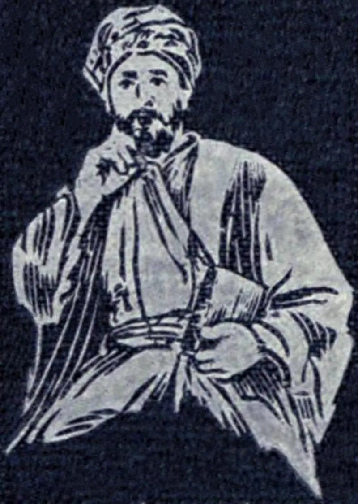
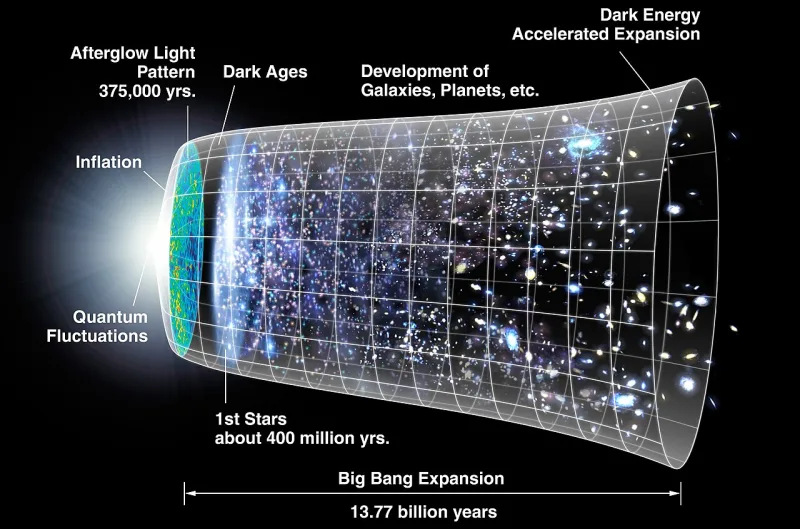

Serious philosophers argue this both ways. Say so before your friend does.
The Kalam runs like this. Whatever begins to exist has a cause.
The universe began. So the universe has a cause, and it sits outside space and time.
The contingency argument, from Leibniz, needs no beginning at all. Even an endless universe could have failed to be there.
So why is there one?
In 2003 three physicists proved a theorem: Borde, Guth and Vilenkin. Any universe that expands on average cannot be endless in the past.
Vilenkin put it bluntly. He wrote that cosmologists "can no longer hide behind the possibility of a past-eternal universe."
Vilenkin also says his theorem is not a proof of God. He says it gives "not much of an advantage to the theologian over the scientist." Say that part yourself, first.
Someone who has read him will check.
Graham Oppy is an atheist thinker. He says we have no example of a thing beginning outside the universe.
So the rule about causes may not reach that far. Sean Carroll adds a physics point.
The theorem is about classical spacetime. Quantum gravity models get round it, such as Aguirre-Gratton.
And the atheist can call the first physical state necessary. That is the same stopping move you make with God, with one thing fewer.
Contested, and say so. The facts are real.
What they mean is argued over by good thinkers on both sides. Use it like this.
God is a serious answer to the deepest question there is. Never as a knockdown.
"Why is there anything at all? I don't think that question has a cheap answer."


Both stories stop somewhere, and the atheist's stopping point has one thing fewer in it.
Graham Oppy answers that the causal premise is a leap. We take what we see inside the universe and apply it to the universe itself. There we have exactly zero examples. Quantum mechanics already strains the rule that every beginning has a cause, since some events look uncaused. Though the quantum vacuum, they grant, is not 'nothing'.
The naturalist can simply call the first physical state necessary, or brute. That is the same stopping move the theist makes with God, and it posits one thing fewer.
Sean Carroll adds a physics point. The BGV theorem is about classical spacetime. It says classical descriptions break down, not that reality began. Quantum-gravity models such as Aguirre-Gratton get round it, and Vilenkin himself denies that it carries theological force. Both stories stop somewhere. Theism has not shown that its stopping point is the better one.
Still open on both sides, so offer it as a real answer, not a win.
Genuinely open — and saying so is the credibility move. The facts are real. BGV is a published theorem, and the contingency question is a serious one. The metaphysics is argued over by the best philosophers on both sides.
So present it like this. Theism is a rationally serious answer to the deepest question there is. Never present it as a knockdown. And never misquote Vilenkin. He is abused by both sides, and a skeptic who has read him will check.